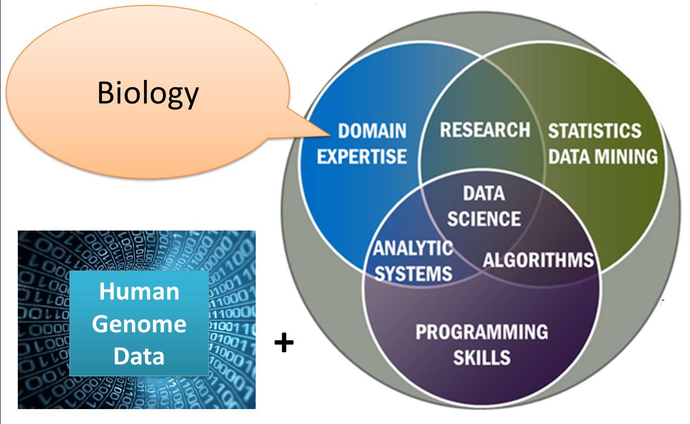

Qu'est-ce que la Bioinformatique?
Pour commencer, la bioinformatique sert à la computation des données biologiques sur la vie humaine ou autre. Cette discipline est essentielle au développement technologique de notre monde parce que nous la faisons dans l'espoir de faire un avancement dans différents études comme notre ADN et des protéines. Cette discipline requiert la maitrise de différents languages, par exemple; Python, Java, HTML, JavaScript, CSS, SQL. Il est aussi recommandé d'avoir une certaine connaissance du système d'exploitation Linux. Le travail requis pour pratiquer ce métier est incroyable, parce qu'il existe plusieurs équipes de rechercheurs travaillant en bioinformatique pour combiner leurs connaissances sur les mathématiques, l'informatique, la physique et la biologie pour arriver à trouver des solutions aux questions scientifiques sur le courant de la vie naturelle.
En conclusion, l'étude consacré dans cette discipline contribue au développement de notre connaissance sur la biologie humaine et ouvrira de nouvelles opportunitées pour la progression techonologique de nous aider à trouver des moyens de sauver ou changer des vies.
